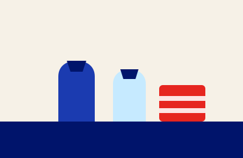

Pickups & Rescues
Scheduled temple runs, plus a quick form to log grocery rescues.
Scheduled pickups
-

SourcingNext: Jul 15Sri Venkateswara Temple — rice + raw materials
Details & instructions
Bring the van. Loading dock is around the back; ask for the kitchen coordinator.
-
SourcingNext: Jul 22
Hindu Community Center — dry goods

Log leftover donations
30-second form — the kitchen sees it right away.